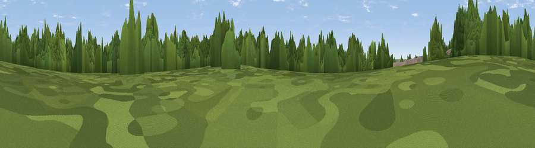

Shireoak Hill
#37481 in England · top 76% of its area beats it · near StonnallThe view, rendered

A 360° render of this exact spot computed from the terrain model, tree cover and land cover — summer colours, afternoon light, calibrated against photographs of famous viewpoints. Real trees, hedges and buildings will differ in detail.
The panorama
Grey silhouette: terrain skyline in each direction (720 bearings, Earth curvature and refraction included). Dashed green: skyline with trees (+15 m) and buildings (+8 m) as obstacles. Blue strip: how far the ground is visible on each bearing.
Where the view opens
Wedge length = distance to the farthest visible ground on that bearing (vegetation-aware). Rings at 10, 25 and 50 km.
What fills the view
44% woodland · 21% grassland · 18% cropland · 16% built-up
Angular shares of the visible panorama (visual magnitude), not map area. Landscape diversity 0.57 (0–1 Shannon).
Key numbers
More beautiful places nearby
The staircase of upgrades: each row has a higher view potential than everything closer. Driving times are estimates from straight-line distance, calibrated against real road routing — check an actual route before setting out.
| Place | Direction | Drive | Score |
|---|---|---|---|
| Viewpoint near Stonnall | SE · 0 km | ~2 min | 57.3 |
| Viewpoint near Streetly | S · 6 km | ~13 min | 69.5 |
| Viewpoint near Clent | SSW · 26 km | ~42 min | 73.8 |
| Viewpoint near Clent | SSW · 27 km | ~43 min | 74.3 |
| Viewpoint near Stanton under Bardon | ENE · 41 km | ~61 min | 76.0 |
| The Ercall | W · 42 km | ~61 min | 79.4 |
| Viewpoint near Little Wenlock | W · 43 km | ~63 min | 84.2 |
| The Wrekin | W · 43 km | ~63 min | 85.0 |
52.63017, -1.91426 · source: osm peak · position refined by local search. Computed location — check access rights before visiting.